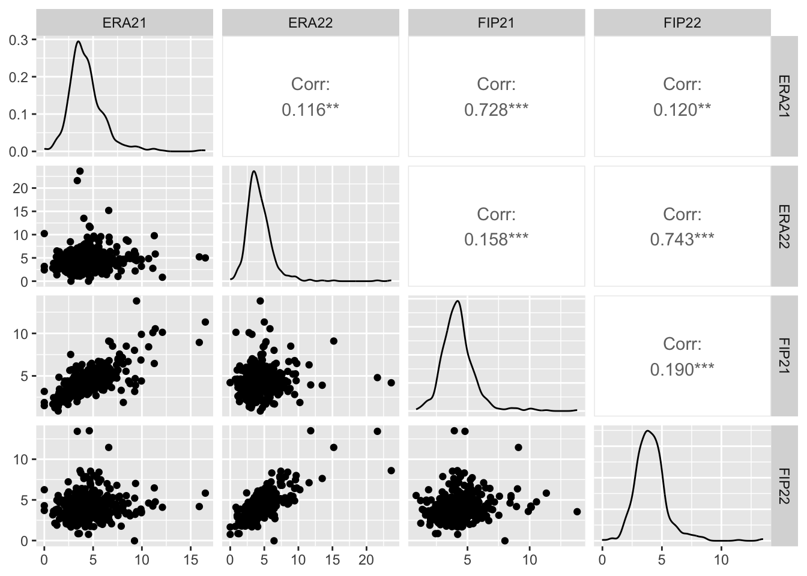
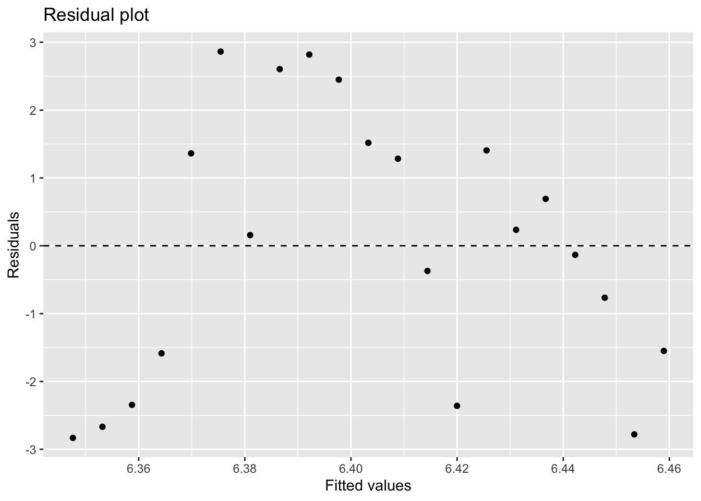
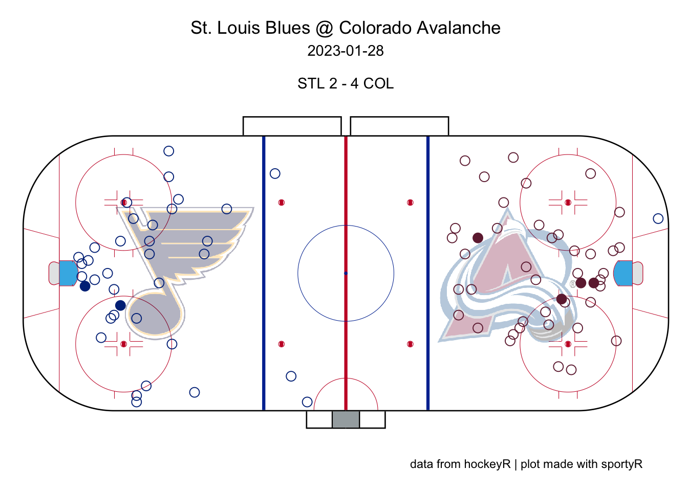
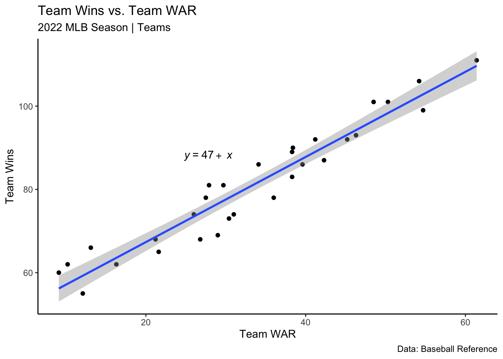
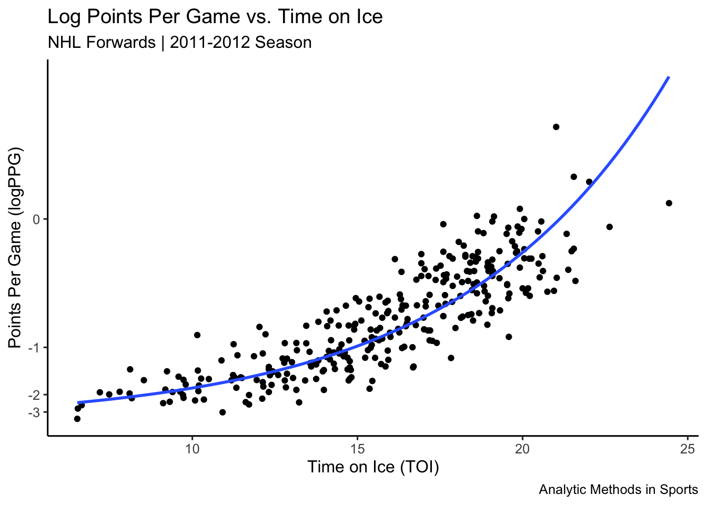
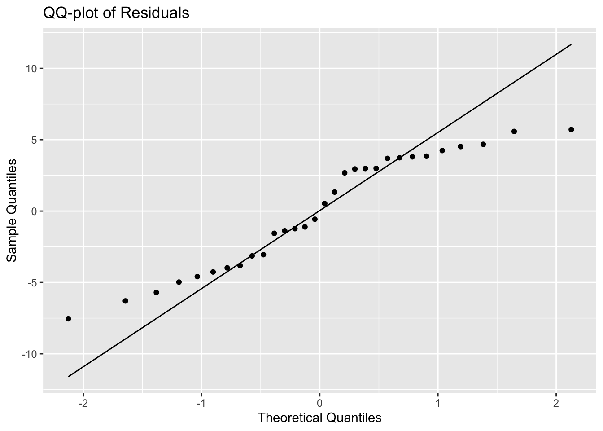
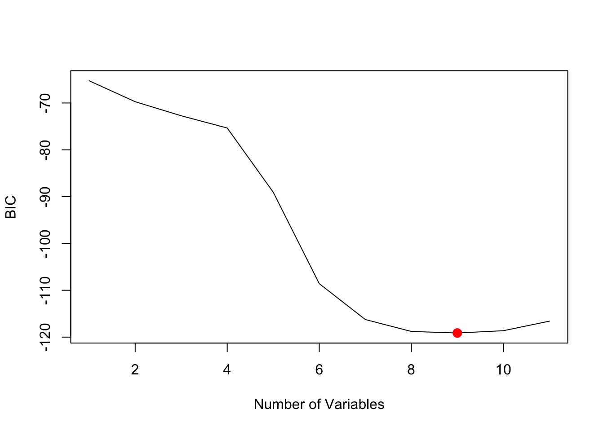
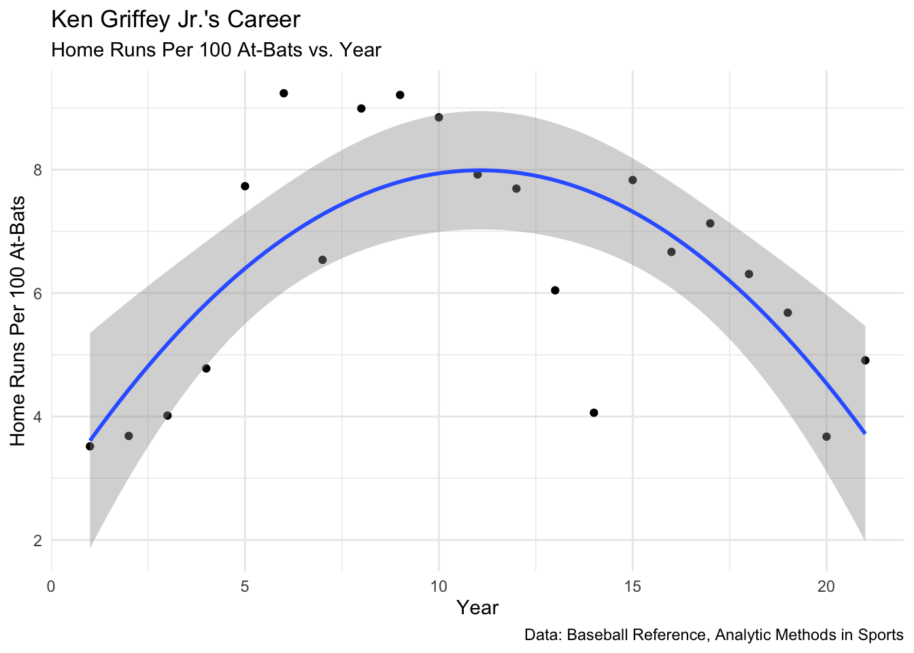

Chapter 7 Linear Regression
Linear regression is a statistical method for modeling a quantitative variable as a function of one or more quantitative variables. This method determines a “line of best fit” by minimizing the sum of squared errors.
Definition 7.1 A simple linear regression model, \(\hat{y} = \hat{\beta}_0 + \hat{\beta}_1 x\), between a dependent variable \(y\) and an independent variable \(x\) is found by minimizing \(SSE=\sum(y_i-\hat{\beta}_0-\hat{\beta}_1x)^2\), where:
\(\hat{\beta}_0 = \bar{y} - \hat{\beta}_1 \bar{x}\) \(\hat{\beta}_1 = \frac{\sum(x_i-\bar{x})(y_i-\bar{y})}{\sum(x_i-\bar{x})^2}\)
Definition 7.2 A multiple linear regression model, \(\hat{y} = \hat{\beta}_0 + \hat{\beta}_1 x_1 + \ldots \hat{\beta}_p x_p\), between a dependent variable \(y\) and an independent variables \(x_1, x_2, \ldots, x_p\) is found by minimizing \(SSE=\sum(y_i-\hat{\beta}_0-\hat{\beta}_1x_1-\hat{\beta}_2x_2- \ldots - -\hat{\beta}_px_p)^2\)
We make a few assumptions when we fit these regression models:
- The response variable can be modeled as a linear combination of the predictor variables (linearity in the parameters).
- The errors are independent normal random variables.
- We seek to minimize the sum of squared errors, SSE.
7.1 Simple Linear Regression
Example 7.1 Download individual MLB pitching statistics for the 2021 and 2022 seasons. Use these datasets to build simple linear regression models with 2022 season ERA as the dependent variable and 2021 season ERA and FIP as the independent variables.
# Download individual pitching data for 2021 and 2022 seasons
library(tidyverse)
library(baseballr)
pit21 <- bref_daily_pitcher("2021-01-01", "2021-12-31") %>%
fip_plus() %>%
dplyr::select(Name, IP, ERA, FIP) %>%
dplyr::arrange(dplyr::desc(IP)) %>%
mutate(IP21=IP,ERA21=ERA,FIP21=FIP)
pit22 <- bref_daily_pitcher("2022-01-01", "2022-12-31") %>%
fip_plus() %>%
dplyr::select(Name, IP, ERA, FIP) %>%
dplyr::arrange(dplyr::desc(IP)) %>%
mutate(IP22=IP,ERA22=ERA,FIP22=FIP)
# merge the datasets together, remove redundant columns
all_pit <- pit21 %>%
left_join(pit22,by = "Name",multiple="first") %>%
select(-c(2:4,8:10)) %>%
filter(IP21>5 & IP22 > 5)
all_pit %>% slice(1:10) %>% kable(booktabs=T)| Name | IP21 | ERA21 | FIP21 | IP22 | ERA22 | FIP22 |
|---|---|---|---|---|---|---|
| Zack Wheeler | 213.1 | 2.78 | 2.57 | 153.0 | 2.82 | 2.87 |
| Walker Buehler | 207.2 | 2.47 | 3.13 | 65.0 | 4.02 | 3.80 |
| Adam Wainwright | 206.1 | 3.05 | 3.62 | 191.2 | 3.71 | 3.65 |
| Sandy Alcántara | 205.2 | 3.19 | 3.39 | 228.2 | 2.28 | 2.97 |
| Robbie Ray | 193.1 | 2.84 | 3.69 | 189.0 | 3.71 | 4.16 |
| José Berríos | 192.0 | 3.52 | 3.47 | 172.0 | 5.23 | 4.55 |
| Kevin Gausman | 192.0 | 2.81 | 2.99 | 174.2 | 3.35 | 2.38 |
| Luis Castillo | 187.2 | 3.98 | 3.69 | 150.1 | 2.99 | 3.07 |
| Frankie Montas | 187.0 | 3.37 | 3.36 | 144.1 | 4.05 | 3.72 |
| Julio Urías | 185.2 | 2.96 | 3.08 | 175.0 | 2.16 | 3.71 |
# look at correlation between pitching stats in 2021 and 2022
library(GGally)
all_pit %>% select(ERA21,ERA22,FIP21,FIP22) %>% ggpairs()
# build scatterplots of ERA22 vs ERA21 and ERA22 vs FIP21
library(gridExtra)
p1 <- all_pit %>% ggplot(aes(x=ERA21,y=ERA22)) +
geom_point() +
geom_smooth(method="lm") +
scale_x_continuous(limits=c(0,10)) +
scale_y_continuous(limits=c(0,10))
p2 <- all_pit %>% ggplot(aes(x=FIP21,y=ERA22)) +
geom_point() +
geom_smooth(method="lm") +
scale_x_continuous(limits=c(0,10)) +
scale_y_continuous(limits=c(0,10))
grid.arrange(p1,p2,nrow=1)
# build SLR model 1: ERA22 ~ ERA21
model1 <- lm(ERA22~ERA21,data=all_pit)
# sloppy output
summary(model1)##
## Call:
## lm(formula = ERA22 ~ ERA21, data = all_pit)
##
## Residuals:
## Min 1Q Median 3Q Max
## -4.4527 -1.1677 -0.3358 0.8101 19.4308
##
## Coefficients:
## Estimate Std. Error t value Pr(>|t|)
## (Intercept) 3.72496 0.23003 16.193 <2e-16 ***
## ERA21 0.12957 0.04867 2.662 0.008 **
## ---
## Signif. codes: 0 '***' 0.001 '**' 0.01 '*' 0.05 '.' 0.1 ' ' 1
##
## Residual standard error: 2.103 on 519 degrees of freedom
## Multiple R-squared: 0.01347, Adjusted R-squared: 0.01157
## F-statistic: 7.088 on 1 and 519 DF, p-value: 0.008003library(broom)
# format the output nicely in a kable table
model1 %>% tidy() %>%
mutate(
p.value = scales::pvalue(p.value),
term = c("Intercept", "ERA21")
) %>%
kable(booktabs=T,digits=c(3,3,3,3),
caption = "SLR Model Estimating ERA22 Using ERA21",
col.names = c("Predictor", "Estimate", "Std Error", "t stat", "p-value")) %>%
kable_styling(latex_options = "hold_position")| Predictor | Estimate | Std Error | t stat | p-value |
|---|---|---|---|---|
| Intercept | 3.725 | 0.230 | 16.193 | <0.001 |
| ERA21 | 0.130 | 0.049 | 2.662 | 0.008 |
# build SLR model 2: ERA22 ~ FIP21
model2 <- lm(ERA22~FIP21,data=all_pit)
# Nicely output regression information
model2 %>% tidy() %>%
mutate(
p.value = scales::pvalue(p.value),
term = c("Intercept", "FIP21")
) %>%
kable(booktabs=T,digits=c(3,3,3,3),
caption = "SLR Model Estimating ERA22 Using FIP21",
col.names = c("Predictor", "Estimate", "Std Error", "t stat", "p-value")) %>%
kable_styling(latex_options = "hold_position")| Predictor | Estimate | Std Error | t stat | p-value |
|---|---|---|---|---|
| Intercept | 3.268 | 0.294 | 11.127 | <0.001 |
| FIP21 | 0.239 | 0.065 | 3.650 | <0.001 |
# build MR model: ERA22 ~ ERA21 + FIP21
model3 <- lm(ERA22~ERA21+FIP21,data=all_pit)
# Nicely output regression information
model3 %>% tidy() %>%
mutate(
p.value = scales::pvalue(p.value),
term = c("Intercept","ERA21","FIP21")
) %>%
kable(booktabs=T,digits=c(3,3,3,3),
caption = "SLR Model Estimating ERA22 Using FIP21",
col.names = c("Predictor", "Estimate", "Std Error", "t stat", "p-value")) %>%
kable_styling(latex_options = "hold_position")| Predictor | Estimate | Std Error | t stat | p-value |
|---|---|---|---|---|
| Intercept | 3.267 | 0.294 | 11.110 | <0.001 |
| ERA21 | 0.002 | 0.071 | 0.029 | 0.977 |
| FIP21 | 0.237 | 0.095 | 2.478 | 0.014 |
Example 7.2 Our goal is to investigate the relationship between MLB team OPS and runs per game.
- Download MLB team offensive statistics for the 2022 season using
rvest.
# scrape the data and output as a kable table
library(rvest)
url <- "https://www.baseball-reference.com/leagues/majors/2022.shtml"
site <- read_html(url)
mlb22 <- site %>% html_elements("#teams_standard_batting") %>% html_table()
mlb22 <- mlb22 %>% data.frame() %>% column_to_rownames("Tm") %>%
dplyr::rename(`R/G`=R.G) %>% slice(-(31:33))
mlb22 %>% select(1:8) %>% kable(booktabs=T)| X.Bat | BatAge | R/G | G | PA | AB | R | H | |
|---|---|---|---|---|---|---|---|---|
| Arizona Diamondbacks | 57 | 26.5 | 4.33 | 162 | 6027 | 5351 | 702 | 1232 |
| Atlanta Braves | 53 | 27.5 | 4.87 | 162 | 6082 | 5509 | 789 | 1394 |
| Baltimore Orioles | 58 | 27.0 | 4.16 | 162 | 6049 | 5429 | 674 | 1281 |
| Boston Red Sox | 54 | 28.8 | 4.54 | 162 | 6144 | 5539 | 735 | 1427 |
| Chicago Cubs | 64 | 27.9 | 4.06 | 162 | 6072 | 5425 | 657 | 1293 |
| Chicago White Sox | 44 | 29.3 | 4.23 | 162 | 6123 | 5611 | 686 | 1435 |
| Cincinnati Reds | 66 | 29.4 | 4.00 | 162 | 5978 | 5380 | 648 | 1264 |
| Cleveland Guardians | 50 | 25.9 | 4.31 | 162 | 6163 | 5558 | 698 | 1410 |
| Colorado Rockies | 43 | 29.1 | 4.31 | 162 | 6105 | 5540 | 698 | 1408 |
| Detroit Tigers | 53 | 27.9 | 3.44 | 162 | 5870 | 5378 | 557 | 1240 |
| Houston Astros | 45 | 29.3 | 4.55 | 162 | 6054 | 5409 | 737 | 1341 |
| Kansas City Royals | 55 | 27.1 | 3.95 | 162 | 6010 | 5437 | 640 | 1327 |
| Los Angeles Angels | 66 | 27.9 | 3.85 | 162 | 5977 | 5423 | 623 | 1265 |
| Los Angeles Dodgers | 51 | 29.6 | 5.23 | 162 | 6247 | 5526 | 847 | 1418 |
| Miami Marlins | 56 | 28.9 | 3.62 | 162 | 5949 | 5395 | 586 | 1241 |
| Milwaukee Brewers | 51 | 29.1 | 4.48 | 162 | 6122 | 5417 | 725 | 1271 |
| Minnesota Twins | 61 | 26.9 | 4.30 | 162 | 6113 | 5476 | 696 | 1356 |
| New York Mets | 61 | 29.7 | 4.77 | 162 | 6176 | 5489 | 772 | 1422 |
| New York Yankees | 54 | 30.2 | 4.98 | 162 | 6172 | 5422 | 807 | 1308 |
| Oakland Athletics | 64 | 28.3 | 3.51 | 162 | 5863 | 5314 | 568 | 1147 |
| Philadelphia Phillies | 56 | 28.1 | 4.61 | 162 | 6077 | 5496 | 747 | 1392 |
| Pittsburgh Pirates | 68 | 26.3 | 3.65 | 162 | 5912 | 5331 | 591 | 1186 |
| San Diego Padres | 55 | 28.2 | 4.35 | 162 | 6175 | 5468 | 705 | 1317 |
| Seattle Mariners | 59 | 27.5 | 4.26 | 162 | 6117 | 5375 | 690 | 1236 |
| San Francisco Giants | 66 | 30.0 | 4.42 | 162 | 6117 | 5392 | 716 | 1261 |
| St. Louis Cardinals | 51 | 28.8 | 4.77 | 162 | 6165 | 5496 | 772 | 1386 |
| Tampa Bay Rays | 61 | 27.0 | 4.11 | 162 | 6008 | 5412 | 666 | 1294 |
| Texas Rangers | 55 | 28.0 | 4.36 | 162 | 6029 | 5478 | 707 | 1308 |
| Toronto Blue Jays | 51 | 27.1 | 4.78 | 162 | 6158 | 5555 | 775 | 1464 |
| Washington Nationals | 55 | 28.7 | 3.72 | 162 | 5998 | 5434 | 603 | 1351 |
- Examine the correlation structure between R/G, BA, OBP, SLG, and OPS.
mlb22_off <- mlb22 %>% select(`R/G`,BA,OBP,SLG,OPS) %>% data.frame() %>% mutate_all(as.numeric)
mlb22_off %>% ggpairs()
- Build a SLR model between runs scored and OPS.
# build SLR model: R/G ~ OPS
model1 <- lm(R.G~OPS,data=mlb22_off)
# Nicely output regression information
model1 %>% tidy() %>%
mutate(
p.value = scales::pvalue(p.value),
term = c("Intercept", "OPS")
) %>%
kable(booktabs=T,digits=c(3,3,3,3),
caption = "SLR Model Estimating Runs Per Game Using Team OPS",
col.names = c("Predictor", "Estimate", "Std Error", "t stat", "p-value")) %>%
kable_styling(latex_options = "hold_position")| Predictor | Estimate | Std Error | t stat | p-value |
|---|---|---|---|---|
| Intercept | -3.842 | 0.485 | -7.919 | <0.001 |
| OPS | 11.509 | 0.686 | 16.771 | <0.001 |
- Plot a scatterplot of R/G and OPS along with the SLR line of best fit and confidence intervals.
mlb22_off %>% ggplot(aes(x=OPS,y=R.G)) + geom_point() +
geom_smooth(method=lm , fill="gray", color="steelblue", se=TRUE) +
labs(title = "Runs Per Game vs. OPS",
subtitle = "2022 MLB Season | Teams",
caption = "Data: Baseball Reference",
x = "On-Base Plus Slugging (OPS)",
y = "Runs Per Game (R/G)") +
theme_bw()
- Use residual analysis to assess the model assumptions in the SLR model.
# Create a data frame with the residuals
residuals <- data.frame(x = fitted(model1), y = residuals(model1))
# Create a residual plot using ggplot2
ggplot(residuals, aes(x, y)) +
geom_point() +
geom_hline(yintercept = 0, linetype = "dashed") +
labs(x = "Fitted values", y = "Residuals", title = "Residual plot")
# Create a QQ-plot of the residuals using ggplot2
ggplot(residuals, aes(sample = y)) +
stat_qq() +
stat_qq_line() +
labs(x = "Theoretical Quantiles", y = "Sample Quantiles", title = "QQ-plot of Residuals")
- Build a MR model between runs scored and SLG, BA, OBP, and OPS.
# build MR model: R/G ~ OPS + BA + OBP + SLG
model2 <- lm(R.G~OPS+BA+OBP+SLG,data=mlb22_off)
# Nicely output regression information
model2 %>% tidy() %>%
mutate(
p.value = scales::pvalue(p.value),
term = c("Intercept", "OPS","BA","OBP","SLG")
) %>%
kable(booktabs=T,digits=c(3,3,3,3),
caption = "MR Model Estimating Runs Per Game Using Team OPS, BA, OBP, SLG",
col.names = c("Predictor", "Estimate", "Std Error", "t stat", "p-value")) %>%
kable_styling(latex_options = "hold_position")| Predictor | Estimate | Std Error | t stat | p-value |
|---|---|---|---|---|
| Intercept | -4.054 | 0.642 | -6.312 | <0.001 |
| OPS | -49.862 | 61.599 | -0.809 | 0.426 |
| BA | -4.482 | 4.081 | -1.098 | 0.283 |
| OBP | 66.032 | 60.116 | 1.098 | 0.282 |
| SLG | 61.004 | 61.762 | 0.988 | 0.333 |
Example 7.3 Data for the MLB 2022 season including team WAR (wins above replacement) and team wins are contained in mlb_2022_team_war.csv.
- Output this data as a kable table.
mlb22_war <- read_csv("data/mlb_2022_team_war.csv")
mlb22_war <- mlb22_war %>% rename(Wins=`Team Wins`,WAR=`Team WAR`)
mlb22_war %>% kable(booktabs=T)| Team | WAR | Wins |
|---|---|---|
| Los Angeles Dodgers | 61.4 | 111 |
| New York Yankees | 54.7 | 99 |
| Houston Astros | 54.2 | 106 |
| Atlanta Braves | 50.3 | 101 |
| New York Mets | 48.5 | 101 |
| St. Louis Cardinals | 46.3 | 93 |
| Toronto Blue Jays | 45.2 | 92 |
| Philadelphia Phillies | 42.3 | 87 |
| Cleveland Guardians | 41.2 | 92 |
| Tampa Bay Rays | 39.6 | 86 |
| Seattle Mariners | 38.4 | 90 |
| Baltimore Orioles | 38.3 | 83 |
| San Diego Padres | 38.3 | 89 |
| Minnesota Twins | 36.0 | 78 |
| Milwaukee Brewers | 34.1 | 86 |
| Chicago Cubs | 31.0 | 74 |
| Los Angeles Angels | 30.4 | 73 |
| San Francisco Giants | 29.7 | 81 |
| Miami Marlins | 29.0 | 69 |
| Chicago White Sox | 27.9 | 81 |
| Boston Red Sox | 27.5 | 78 |
| Texas Rangers | 26.8 | 68 |
| Arizona Diamondbacks | 26.0 | 74 |
| Kansas City Royals | 21.6 | 65 |
| Colorado Rockies | 21.2 | 68 |
| Cincinnati Reds | 16.3 | 62 |
| Detroit Tigers | 13.1 | 66 |
| Washington Nationals | 12.1 | 55 |
| Pittsburgh Pirates | 10.2 | 62 |
| Oakland Athletics | 9.1 | 60 |
- Fit a simple linear regression model with team wins as the dependent variable and team WAR as the independent variable.
# build SLR model: Team Wins ~ Team WAR
model <- lm(Wins~WAR,data=mlb22_war)
# Nicely output regression information
model %>% tidy() %>%
mutate(
p.value = scales::pvalue(p.value),
term = c("Intercept", "Team WAR")
) %>%
kable(booktabs=T,digits=c(3,3,3,3),
caption = "SLR Model Estimating Team Wins Using Team WAR",
col.names = c("Predictor", "Estimate", "Std Error", "t stat", "p-value")) %>%
kable_styling(latex_options = "hold_position")| Predictor | Estimate | Std Error | t stat | p-value |
|---|---|---|---|---|
| Intercept | 46.896 | 1.977 | 23.726 | <0.001 |
| Team WAR | 1.022 | 0.055 | 18.630 | <0.001 |
- Plot a scatterplot along with the line of best fit.
library(ggpubr)
mlb22_war %>% ggplot(aes(x=WAR,y=Wins)) +
geom_point() +
geom_smooth(method="lm") +
stat_regline_equation(label.x.npc = 0.3,label.y.npc = 0.6) +
labs(title = "Team Wins vs. Team WAR",
subtitle = "2022 MLB Season | Teams",
caption = "Data: Baseball Reference",
x = "Team WAR",
y = "Team Wins") +
theme_classic()
7.2 Residual Analysis
It is important to check model assumptions. If assumptions are violated, then our inferences may be flawed.
- Complete residual analysis of the SLR model.
# Create a data frame with the residuals
residuals <- data.frame(x = fitted(model), y = residuals(model))
# Create a residual plot using ggplot2
ggplot(residuals, aes(x, y)) +
geom_point() +
geom_hline(yintercept = 0, linetype = "dashed") +
labs(x = "Fitted values", y = "Residuals", title = "Residual plot")
# Create a QQ-plot of the residuals using ggplot2
ggplot(residuals, aes(sample = y)) +
stat_qq() +
stat_qq_line() +
labs(x = "Theoretical Quantiles", y = "Sample Quantiles", title = "QQ-plot of Residuals")
- In 2022, the Colorado Rockies were 68-94 and accumulated a total of 21.2 team wins above replacement (WAR). Estimate the Rockies team wins from their team WAR and compare this to their actual win total.
mlb22_war <- mlb22_war %>%
mutate(xWins = predict(model,data.frame(WAR=mlb22_war$WAR)))
( xWins <- predict(model,data.frame(WAR=21.2)) )## 1
## 68.57095## # A tibble: 1 × 4
## Team WAR Wins xWins
## <chr> <dbl> <dbl> <dbl>
## 1 Colorado Rockies 21.2 68 68.67.3 Polynomial Regression
Example 7.4 Ken Griffey Jr. was a baseball hall of fame outfielder from 1989–2009. For each of his of his career, the number of home runs per 100 at-bats is record. This data is found in griffey_hr.csv. (From )
- Output this dataset to a kable table.
griffey <- read_csv("data/griffey_hr.csv")
griffey <- griffey %>% mutate(Year = Year-1988,`HR/100AB` = HR) %>% select(Year,`HR/100AB`)
griffey %>% kable(booktabs=T,digits=c(0,2))| Year | HR/100AB |
|---|---|
| 1 | 3.52 |
| 2 | 3.69 |
| 3 | 4.01 |
| 4 | 4.78 |
| 5 | 7.73 |
| 6 | 9.24 |
| 7 | 6.54 |
| 8 | 8.99 |
| 9 | 9.21 |
| 10 | 8.85 |
| 11 | 7.92 |
| 12 | 7.69 |
| 13 | 6.04 |
| 14 | 4.06 |
| 15 | 7.83 |
| 16 | 6.67 |
| 17 | 7.13 |
| 18 | 6.31 |
| 19 | 5.68 |
| 20 | 3.67 |
| 21 | 4.91 |
- Fit a SLR model between HR/AB and Year.
model <- lm(`HR/100AB`~Year,data=griffey)
model %>% tidy() %>%
mutate(
p.value = scales::pvalue(p.value),
term = c("Intercept", "Year")
) %>%
kable(booktabs=T,digits=c(3,3,3,3),
caption = "SLR Model Estimating HR/100AB using Year",
col.names = c("Predictor", "Estimate", "Std Error", "t stat", "p-value")) %>%
kable_styling(latex_options = "hold_position")| Predictor | Estimate | Std Error | t stat | p-value |
|---|---|---|---|---|
| Intercept | 6.342 | 0.910 | 6.969 | <0.001 |
| Year | 0.006 | 0.072 | 0.077 | 0.940 |
- Plot the SLR model and comment on the model fit.
griffey %>% ggplot(aes(x=Year,y=`HR/100AB`)) +
geom_point() +
geom_smooth(method="lm") +
stat_regline_equation(label.x.npc = 0.3,label.y.npc = 0.6) +
labs(title = "Home Runs Per 100 At-Bats vs. Year",
subtitle = "Ken Griffey Jr.'s Career",
caption = "Data: Baseball Reference, Analytic Methods in Sports",
x = "Year",
y = "Home Runs per 100 AB") +
theme_classic()
- Plot the residuals as a function of fitted values for the SLR model. Is the linearity assumption appropriate?
# Create a data frame with the residuals
residuals <- data.frame(x = fitted(model), y = residuals(model))
# Create a residual plot using ggplot2
ggplot(residuals, aes(x, y)) +
geom_point() +
geom_hline(yintercept = 0, linetype = "dashed") +
labs(x = "Fitted values", y = "Residuals", title = "Residual plot")
- Repeat (b)-(c) using a quadratic model.
model_quad <- lm(`HR/100AB`~Year+I(Year^2),data=griffey)
model_quad %>% tidy() %>%
mutate(
p.value = scales::pvalue(p.value),
term = c("Intercept", "Year","Year^2")
) %>%
kable(booktabs=T,digits=c(3,3,3,3),
caption = "SLR Model Estimating Home Runs per 100 At-Bats using Year",
col.names = c("Predictor", "Estimate", "Std Error", "t stat", "p-value")) %>%
kable_styling(latex_options = "hold_position")| Predictor | Estimate | Std Error | t stat | p-value |
|---|---|---|---|---|
| Intercept | 2.693 | 1.005 | 2.680 | 0.015 |
| Year | 0.957 | 0.210 | 4.549 | <0.001 |
| Year^2 | -0.043 | 0.009 | -4.657 | <0.001 |
griffey %>% ggplot(aes(x=Year,y=`HR/100AB`)) +
geom_point() +
geom_smooth(method="lm", formula = y ~ x + I(x^2)) +
labs(title = "Ken Griffey Jr.'s Career",
subtitle = "Home Runs Per 100 At-Bats vs. Year",
caption = "Data: Baseball Reference, Analytic Methods in Sports",
x = "Year",
y = "Home Runs Per 100 At-Bats") +
theme_minimal()
7.4 Variable Transformations
Sometimes a variable transformation (either predictor or response) may be necessary to meet our model assumptions.
Example 7.5 For the 2011-2012 NHL season, data was collected for all forwards that played at least 60 games and average at least 6 minutes per game.
- Create a kable table with the first ten entries.
nhl_toi <- read_csv("data/nhl_toi_11-12.csv")
nhl_toi <- nhl_toi %>% mutate(PPG = P/GP)
nhl_toi <- nhl_toi %>% column_to_rownames("Name")
nhl_toi %>% slice(1:10) %>% kable(booktabs=T,digits=3)| GP | P | TOI | PPG | |
|---|---|---|---|---|
| Daniel Winnik | 84 | 23 | 16.700 | 0.274 |
| Cody Hodgson | 83 | 41 | 13.817 | 0.494 |
| Steven Stamkos | 82 | 97 | 22.017 | 1.183 |
| Ryan Getzlaf | 82 | 57 | 21.600 | 0.695 |
| Eric Staal | 82 | 70 | 21.550 | 0.854 |
| Zach Parise | 82 | 69 | 21.483 | 0.841 |
| Anze Kopitar | 82 | 76 | 21.333 | 0.927 |
| Dany Heatley | 82 | 53 | 20.950 | 0.646 |
| Joe Pavelski | 82 | 61 | 20.617 | 0.744 |
| Jarome Iginla | 82 | 67 | 20.600 | 0.817 |
- Fit a SLR model with Points Per Game (PPG) as the dependent variable and Time on Ice (TOI) as the independent variable.
model <- lm(PPG~TOI,data=nhl_toi)
model %>% tidy() %>%
mutate(
p.value = scales::pvalue(p.value),
term = c("Intercept", "TOI")
) %>%
kable(booktabs=T,digits=c(3,3,3,3),
caption = "SLR Model Estimating Points Per Game Using Time on Ice",
col.names = c("Predictor", "Estimate", "Std Error", "t stat", "p-value")) %>%
kable_styling(latex_options = "hold_position")| Predictor | Estimate | Std Error | t stat | p-value |
|---|---|---|---|---|
| Intercept | -0.505 | 0.037 | -13.503 | <0.001 |
| TOI | 0.064 | 0.002 | 27.622 | <0.001 |
- Plot the SLR model and assess the quality of the model.
nhl_toi %>% ggplot(aes(x=TOI,y=PPG)) +
geom_point() +
geom_smooth(method="lm") +
stat_regline_equation(label.x.npc = 0.3,label.y.npc = 0.6) +
labs(title = "Points Per Game vs. Time on Ice",
subtitle = "NHL Forwards | 2011-2012 Season",
caption = "Data: Analytic Methods in Sports",
x = "Time on Ice (TOI)",
y = "Points Per Game (PPG)") +
theme_light()
- Generate a fitted values versus residuals plot and use it to determine the appropriateness of the linearity assumption.
# Create a data frame with the residuals
residuals <- data.frame(x = fitted(model), y = residuals(model))
# Create a residual plot using ggplot2
ggplot(residuals, aes(x, y)) +
geom_point() +
geom_hline(yintercept = 0, linetype = "dashed") +
labs(x = "Fitted values", y = "Residuals", title = "Residual plot")
- Log-transform PPG and refit the SLR model.
nhl_toi <- nhl_toi %>% mutate(logPPG = log(PPG))
model <- lm(logPPG~TOI,data=nhl_toi)
model %>% tidy() %>%
mutate(
p.value = scales::pvalue(p.value),
term = c("Intercept", "TOI")
) %>%
kable(booktabs=T,digits=c(3,3,3,3),
caption = "SLR Model Estimating Log Points Per Game Using Time on Ice",
col.names = c("Predictor", "Estimate", "Std Error", "t stat", "p-value")) %>%
kable_styling(latex_options = "hold_position")| Predictor | Estimate | Std Error | t stat | p-value |
|---|---|---|---|---|
| Intercept | -3.39 | 0.089 | -38.157 | <0.001 |
| TOI | 0.16 | 0.005 | 29.191 | <0.001 |
- Plot the log-transformed model. Does the model seem appropriate?
nhl_toi %>% ggplot(aes(x=TOI,y=logPPG)) +
geom_point() +
geom_smooth(method="lm",se=F) +
labs(title = "Log Points Per Game vs. Time on Ice",
subtitle = "NHL Forwards | 2011-2012 Season",
caption = "Analytic Methods in Sports",
x = "Time on Ice (TOI)",
y = "Points Per Game (logPPG)") +
theme_classic2() +
coord_trans(y = "exp") +
scale_y_continuous(breaks=-3:1)
- Generate a fitted values versus residuals plot and use it to determine the appropriateness of the linearity assumption.
# Create a data frame with the residuals
residuals <- data.frame(x = fitted(model), y = residuals(model))
# Create a residual plot using ggplot2
ggplot(residuals, aes(x, y)) +
geom_point() +
geom_hline(yintercept = 0, linetype = "dashed") +
labs(x = "Fitted values", y = "Residuals", title = "Residual plot")
7.5 Multiple Regression and Model Selection
Suppose we want to build a multiple regression model with a number of predictor variables. Which predictor variables should we include in our model?
There are many ways to do model selection. We will focus on all subsets.
library(rvest)
url <- "https://www.baseball-reference.com/leagues/majors/2022.shtml"
site <- read_html(url)
raw_data <- site %>% html_elements("#teams_standard_batting") %>% html_table()
raw_data %>% data.frame() %>% select(1:10) %>% slice(1:5) %>% kable(booktabs=T)| Tm | X.Bat | BatAge | R.G | G | PA | AB | R | H | X2B |
|---|---|---|---|---|---|---|---|---|---|
| Arizona Diamondbacks | 57 | 26.5 | 4.33 | 162 | 6027 | 5351 | 702 | 1232 | 262 |
| Atlanta Braves | 53 | 27.5 | 4.87 | 162 | 6082 | 5509 | 789 | 1394 | 298 |
| Baltimore Orioles | 58 | 27.0 | 4.16 | 162 | 6049 | 5429 | 674 | 1281 | 275 |
| Boston Red Sox | 54 | 28.8 | 4.54 | 162 | 6144 | 5539 | 735 | 1427 | 352 |
| Chicago Cubs | 64 | 27.9 | 4.06 | 162 | 6072 | 5425 | 657 | 1293 | 265 |
# convert from character to numeric
mlb_2022 <- raw_data %>% data.frame() %>% mutate_if(is.character, as.numeric)
# remove some unnecessary columns
mlb_2022 <- mlb_2022 %>% select(-Tm,-X.Bat,-BatAge,-G,-R,-AB,-PA,-OPS.,-RBI,-IBB) %>% slice(1:30)
mlb_2022 %>% slice(1:5) %>% select(1:10) %>% kable(booktabs=T)| R.G | H | X2B | X3B | HR | SB | CS | BB | SO | BA |
|---|---|---|---|---|---|---|---|---|---|
| 4.33 | 1232 | 262 | 24 | 173 | 104 | 29 | 531 | 1341 | 0.230 |
| 4.87 | 1394 | 298 | 11 | 243 | 87 | 31 | 470 | 1498 | 0.253 |
| 4.16 | 1281 | 275 | 25 | 171 | 95 | 31 | 476 | 1390 | 0.236 |
| 4.54 | 1427 | 352 | 12 | 155 | 52 | 20 | 478 | 1373 | 0.258 |
| 4.06 | 1293 | 265 | 31 | 159 | 111 | 37 | 507 | 1448 | 0.238 |
model1 <- lm(R.G~.,data=mlb_2022)
model1 %>% tidy() %>%
mutate(
p.value = scales::pvalue(p.value)) %>%
kable(booktabs=T,digits=c(3,3,3,3),
caption = "MR Model Estimating Runs Per Game Using Multiple Variables",
col.names = c("Predictor", "Estimate", "Std Error", "t stat", "p-value")) %>%
kable_styling(latex_options = "hold_position")| Predictor | Estimate | Std Error | t stat | p-value |
|---|---|---|---|---|
| (Intercept) | 0.785 | 1.505 | 0.522 | 0.611 |
| H | 0.012 | 0.003 | 4.224 | 0.001 |
| X2B | 0.002 | 0.005 | 0.416 | 0.685 |
| X3B | 0.003 | 0.013 | 0.236 | 0.817 |
| HR | 0.006 | 0.016 | 0.366 | 0.720 |
| SB | 0.000 | 0.001 | -0.242 | 0.813 |
| CS | -0.001 | 0.003 | -0.549 | 0.593 |
| BB | 0.003 | 0.003 | 0.997 | 0.339 |
| SO | 0.000 | 0.000 | -0.324 | 0.751 |
| BA | -53.701 | 35.632 | -1.507 | 0.158 |
| OBP | 36.931 | 39.319 | 0.939 | 0.366 |
| SLG | 10.601 | 50.799 | 0.209 | 0.838 |
| OPS | -17.862 | 35.656 | -0.501 | 0.625 |
| TB | NA | NA | NA | NA |
| GDP | -0.004 | 0.001 | -4.652 | <0.001 |
| HBP | 0.004 | 0.003 | 1.135 | 0.279 |
| SH | 0.002 | 0.002 | 1.454 | 0.172 |
| SF | 0.008 | 0.002 | 3.370 | 0.006 |
| LOB | -0.005 | 0.001 | -7.056 | <0.001 |
7.5.1 Model Selection using BIC
library(leaps)
regsubsets.out <-
regsubsets(`R.G`~.,
data = mlb_2022,
nbest = 1,
nvmax = 10,
method = "exhaustive")## Warning in leaps.setup(x, y, wt = wt, nbest = nbest, nvmax = nvmax, force.in =
## force.in, : 1 linear dependencies found## Reordering variables and trying again:summary.out <- summary(regsubsets.out)
plot(summary.out$bic, xlab = "Number of Variables", ylab = "BIC", type = "l")
bic_min = which.min(summary.out$bic) # 6
points(bic_min, summary.out$bic[bic_min], col = "red", cex = 2, pch = 20)
## (Intercept) H X2B X3B HR SB
## TRUE FALSE FALSE FALSE FALSE FALSE
## CS BB SO BA OBP SLG
## FALSE FALSE FALSE FALSE FALSE FALSE
## OPS TB GDP HBP SH SF
## TRUE FALSE FALSE FALSE FALSE FALSE
## LOB
## FALSE## [1] 9## (Intercept) H X2B X3B HR SB
## TRUE FALSE FALSE FALSE FALSE FALSE
## CS BB SO BA OBP SLG
## TRUE FALSE FALSE TRUE TRUE FALSE
## OPS TB GDP HBP SH SF
## TRUE TRUE TRUE FALSE TRUE TRUE
## LOB
## TRUE## [1] 10## (Intercept) H X2B X3B HR SB
## TRUE TRUE FALSE FALSE FALSE FALSE
## CS BB SO BA OBP SLG
## TRUE FALSE FALSE TRUE TRUE FALSE
## OPS TB GDP HBP SH SF
## TRUE TRUE TRUE FALSE TRUE TRUE
## LOB
## TRUE# Model chosen to minimize BIC
model2 <- lm(R.G~CS+BA+OBP+SLG+TB+GDP+SH+SF+LOB,data=mlb_2022)
model2 %>% tidy() %>%
mutate(
p.value = scales::pvalue(p.value)) %>%
kable(booktabs=T,digits=c(3,3,3,3),
caption = "MR Model Estimating Runs Per Game Using Multiple Variables",
col.names = c("Predictor", "Estimate", "Std Error", "t stat", "p-value")) %>%
kable_styling(latex_options = "hold_position")| Predictor | Estimate | Std Error | t stat | p-value |
|---|---|---|---|---|
| (Intercept) | -0.367 | 0.421 | -0.871 | 0.394 |
| CS | -0.003 | 0.001 | -2.492 | 0.022 |
| BA | -25.535 | 2.550 | -10.014 | <0.001 |
| OBP | 47.574 | 3.201 | 14.860 | <0.001 |
| SLG | -43.668 | 5.009 | -8.718 | <0.001 |
| TB | 0.009 | 0.001 | 10.153 | <0.001 |
| GDP | -0.003 | 0.001 | -5.620 | <0.001 |
| SH | 0.003 | 0.001 | 2.603 | 0.017 |
| SF | 0.009 | 0.001 | 6.342 | <0.001 |
| LOB | -0.005 | 0.000 | -10.541 | <0.001 |